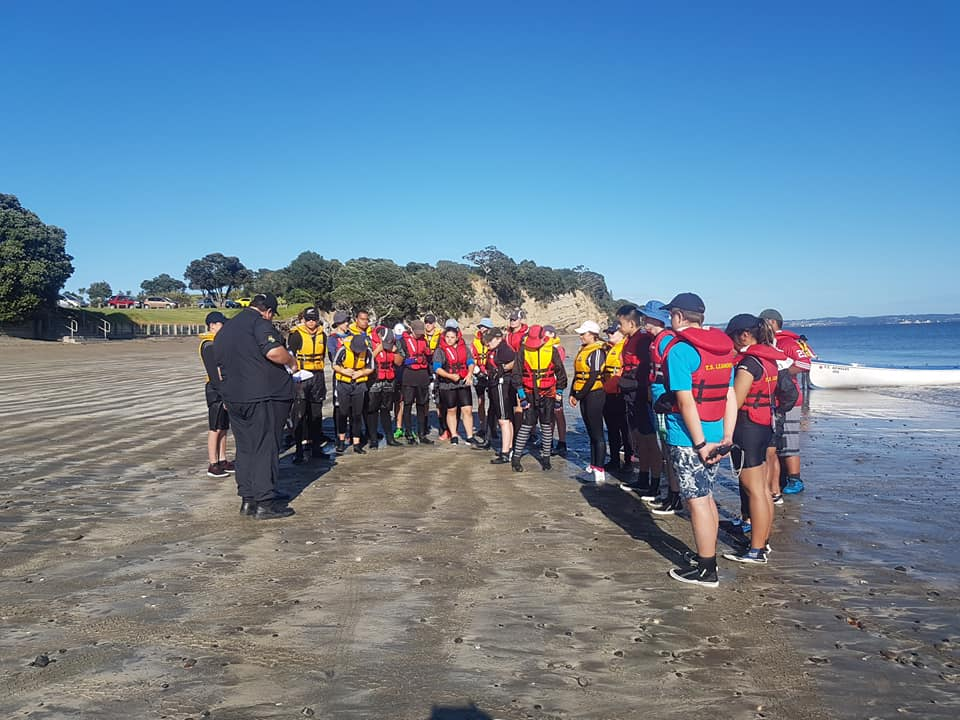

An Overview of some of the activities we do at T.S Gambia.
| Sailing (crown) | |
|
|
| Sailing (Feva Yachts) | |
| Feva Yachts are a fun way to sail for more experienced Sea Cadets. These small yachts are usually crewed by 2 Cadets and when the wind gets up, you really can fly along the water! |
|
| Pulling (Rowing) | |
Pulling is another water based activity that we do at TS Achilles and is great for learning to work together as a team.
|
|
| Kayaking | |
| Kayaking is another activity that we do, especially when we are doing activities with other local Sea Cadet Units. |
|
| Rifle Shooting | |
Sea Cadets also learn Rifle Shooting alongside their other activities. They shoot at targets in a controlled environment on an indoor shooting range.
|
|
| Rope Work | |
| Rope Work is taught to Sea Cadets on a regular basis. This skill is very useful for many other activities, including rigging boats and camping. |
|
| First Aid | |
Sea Cadets are taught basic first aid and casualty evacuation. We sometimes conduct realistic practise such as the photo opposite.
|
|
| Team Building Exercises | |
| Teamworkis one of the core values taught at Sea Cadets and at TS Achilles everything we do has an element of teamwork involved in it. |
|
| Camps | |

|
At TS Achilles we are often involved in activities with other units, whether that being a camp in Auckland or going on a road trip to a camp at places such as Whangarei or Tauranga.
|
| Boating Courses | |
| Once Sea Cadets have some experience, they may be eligible to take part in some Boating Courses which include the Coastguard Day Skipper's qualification and the Coxswain's Course. | Leadership Courses |
Leadership courses are for cadets that have some experience and are keen to progress further up the ranks. There are various leadership courses that a Sea Cadet has to do in order to be eligible for promotion.
|
|
| Local Unit and Combined National Unit Competitions | |
Sea Cadets compete in both Northern Area and National Competitions against other Sea Cadet Units.
|
 |
Naval Ship Visits |
Sea Cadets are sometimes lucky to be invited aboard a New Zealand Navy ship and given a tour.
|
|
| Overseas Exchanges | |
| Sometimes Cadets get the opportunity to be part of an overseas Sea Cadet exchange to another country. Some of the countries that Cadets have been to recently include England, America, Canada and Singapore. |
|